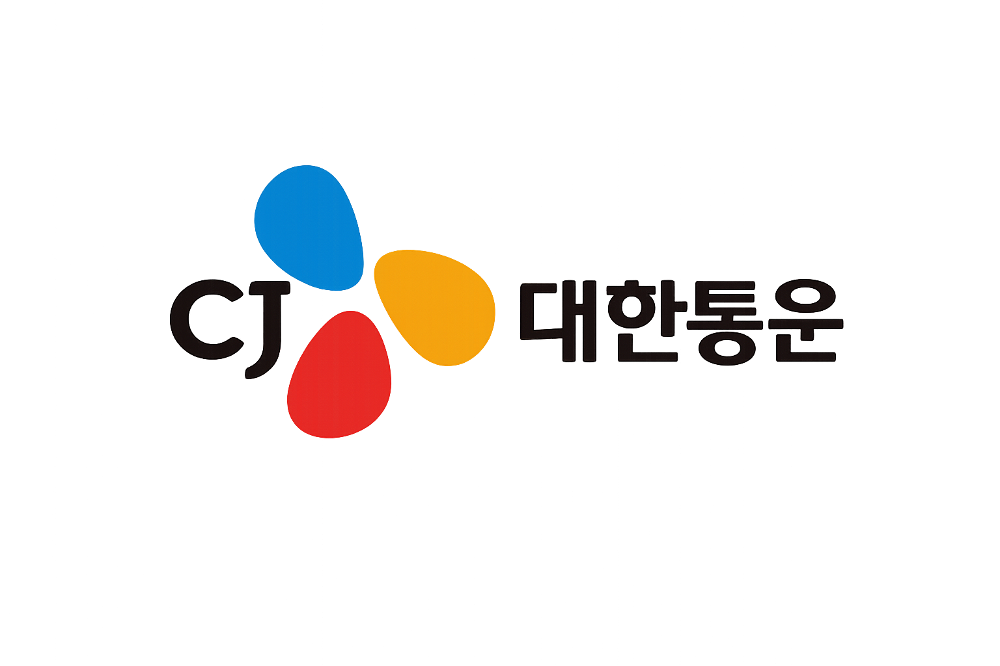

먼저 물류 운임 진단을 위한 기본 자료를 제출하고, 이어서 물류 운영 진단을 통해 현재 구조의 비효율을 점검해보세요. 진단 결과를 바탕으로 더 운반이 어떤 방식으로 개선을 지원할 수 있는지까지 한 번에 확인할 수 있습니다.
운임 검토 양식을 제출하면 단일구간 단가, 복수구간 단가, 고정/비고정 운임 구조를 기준으로 더 운반이 오프라인으로 검토하고 피드백합니다.
운임, 배차, 정산, 디지털 운영 관점에서 현재 구조의 비효율과 개선 우선순위를 진단합니다.
진단 결과를 기반으로 AI Pricing, 실시간 관제, 정산 자동화 등 더 운반의 해결 방안을 제안합니다.